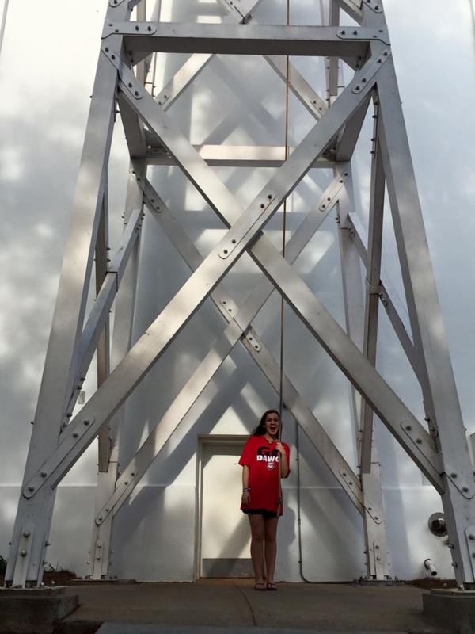

My name is Devyn Hickox and I am a sophomore at the University of Georgia. From the moment I toured the University of Georgia, I knew I wanted to go here. Coming to college is like starting your life over from scratch. It is the most terrifying yet gratifying thing you will do in your young life. This is my tribute to all of the seniors out there to know what they should expect. It all starts with moving in. This is a very monumental moment in your life. You say goodbye to your friends, your family, and everything you've ever known. But do not be scared! There is so much to be excited for! ! In this next year you will experience so many new things and meet so many new people. To do freshman year right, there are definitely some guidelines you should follow. These are my tips for freshman year!
When you come to college, make sure you get involved. UGA is a massive school but getting involved in organizations around campus is an amazing way to make it seem a lot smaller and to make a ton of friends. There is a wide array of areas you can get involved in. There are huge organizations on campus such as UGA miracle or Relay for Life where you can be part of something and make a difference and there is also a club for everything you could think of. If there isn't a club for something you are interested, the University encourages you to make one yourself. One amazing this about the University of Georgia is the incredible fan base. From the moment you decide to come to UGA, you are a dawg for the rest of your life. Win or lose, the dawgs always come together and support the teams. Freshman year I reccomend attending all of the games. This is a great way to meet new people and feel like you are part of something bigger than yourself. Every year before the football season starts, a hype video is released to get everyone excited. I definitely reccomend watching it to get you excited for the best 4 years of your life. UGA Hype Video
| Dos | Don'ts |
|---|---|
| Make friends with strangers | Sit alone in every class |
| Go outside your comfort zone | Shy away from opportunities to meet people |
| Be respectful to your roommate | Be messy in your dorm |
| Make time to go to the gym | Eat pizza for every meal |
| Get involved | Stay in and watch netflix every night |
| Have the best year of your life | Let life pass you by |
The best thing about freshman year is it is a time to be yourself and experience things you never have before. Do not be scared to talk to people and know everyone is in the same boat. Whether if you are from in state and know one hundred people or if you are from Alaska and know no one, everyone wants to make new friends and everyone is new to this place. Also know that the transition might be difficult at the beginning and that is normal too. I promise by the end of this year you will be so happy you made the decision to go here.Take time to talk to that girl sitting next to you on the bus or that boy in your Science class. These might end up being your new best friends! Work hard in school but also really enjoy your freshman year. I can't tell you how much I wish I was a freshman again. You still have four years left at this amazing University. Enjoy it.
Back to top